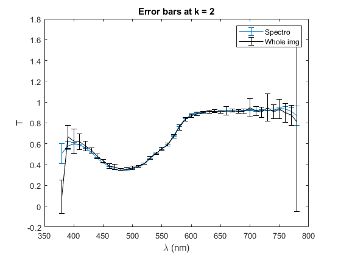
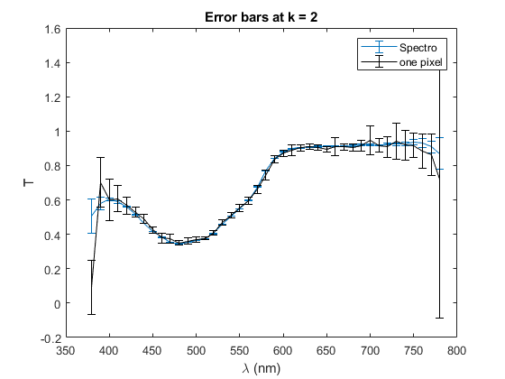
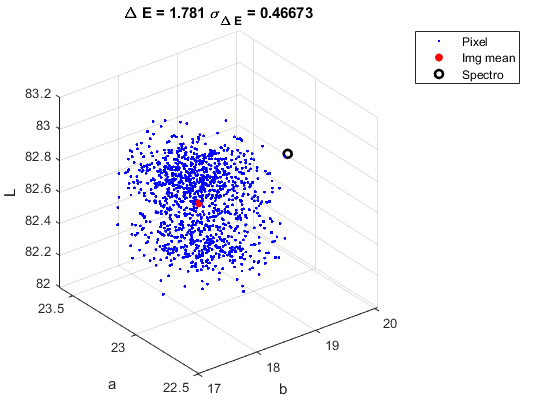

Contents
for Wei-Chuing verification of the data
07/10/2019
% Author: Paul Lemaillet, using Wei-Chung's code function t_dE_wcc(filter_number)
close all;
Formulas
Transmittance
trans_mean = @(s_m, w_m, b_m) (s_m - b_m)./ (w_m - b_m);
trans_std = @(s_m, w_m, b_m, s_s, w_s, b_s) ...
sqrt((1./(w_m-b_m)).^2 .* s_s.^2 + ...
((s_m - w_m)./(w_m-b_m).^2).^2 .* b_s.^2 + ...
((b_m - s_m)./(w_m-b_m).^2).^2 .* w_s.^2);
% CIE DeltaE 2000
DeltaE = @(LAB_1, LAB_2) sqrt((LAB_1(1) - LAB_2(1)).^2 + ... % L
(LAB_1(2) - LAB_2(2)).^2 + ... % a
(LAB_1(3) - LAB_2(3)).^2); % b
Sigma_DeltaE = @(LAB_1, LAB_2, CovLAB_1, CovLAB_2) sqrt(...
1./DeltaE(LAB_1, LAB_2).^2*[(LAB_1(1) - LAB_2(1)) (LAB_1(2) - LAB_2(2)) (LAB_1(3) - LAB_2(3)) -(LAB_1(1) - LAB_2(1)) -(LAB_1(2) - LAB_2(2)) -(LAB_1(3) - LAB_2(3))]...
*blkdiag(CovLAB_1, CovLAB_2)*[(LAB_1(1) - LAB_2(1)) (LAB_1(2) - LAB_2(2)) (LAB_1(3) - LAB_2(3)) -(LAB_1(1) - LAB_2(1)) -(LAB_1(2) - LAB_2(2)) -(LAB_1(3) - LAB_2(3))]'...
);
Paths
path_to_code = pwd;
path_to_rdata = [path_to_code '\input\Filter_' filter_number];
% Folders for camera measurements
filter_name = ['Filter_' filter_number];
foldername_sample = [path_to_rdata '\\' filter_name '_sample']; % For the filter spectra
foldername_white = [path_to_rdata '\\' filter_name '_white']; % For the 100% tranmittance
foldername_black = [path_to_rdata '\\' filter_name '_black']; % For the 0% tranmittance
% Folder for spectro-radiometer measurements
foldername_spectro = [filter_name '_spectro_8xFast'];
1: Transmittance form the spectrometer measurements
Number of repeated measurements
n_meas = 10;
% Spectrometer spectrum range
lambda = 380:780;
% Load the spectrometer data
load(['input\' filter_name '\' foldername_spectro '\spectro_meas'],'spectra')
% Compute mean value and error of the signals
s_filter = spectra(:, :, 1);
s_white = spectra(:, :, 2);
s_black = spectra(:, :, 3);
s_filter_m = mean(s_filter);
s_white_m = mean(s_white);
s_black_m = mean(s_black);
s_filter_s = std(s_filter)./sqrt(n_meas);
s_white_s = std(s_white)./sqrt(n_meas);
s_black_s = std(s_black)./sqrt(n_meas);
% Compute the transmittance
t_mean_spectro = trans_mean(s_filter_m, s_white_m, s_black_m);
t_std_spectro = trans_std(s_filter_m, s_white_m, s_black_m, s_filter_s, s_white_s, s_black_s);
trans_spectro = [lambda; t_mean_spectro; t_std_spectro]';
2: Spectrometer: calculate LAB (T -> XYZ -> LAB)
Prepares the illuminant
load ('input\DataIlluminants\spec_cied65','spec'); ls = spec(1:10:401,2); % Compute LAB for the spectro [LAB_spectro, CovLAB_spectro, XYZ_spectro, CovXYZ_spectro] = transmittance2LAB(t_mean_spectro(1:10:401)', t_std_spectro(1:10:401)', 1, 41, ls);
Combining reflectance and illuminant into LAB...
calculate SPD...
calculate XYZ...
calculate values...
calculate SPD...
calculate uncertainties...
calculate LAB...
calculate values...
calculate uncertainties...
2: Camera: calculate transmittance
Change folder to rawdata cd(path_to_rdata);
for x = 1:10
for x = 1:10 disp(x) end
disp(x) end
% Compute the tranmittance based on the spatial average of numberofshots % images and the corresponding stat stored in img_ms. % trans_ms is the tramsittance based on spatial average of the images % trans_array_m and trans_array_s are pixel by pixel values numberofshots = 10; [trans_cam_ms, trans_array_m, trans_array_s, sizey, sizex] = frame2transmittance_white_PL(foldername_sample, foldername_white, foldername_black, numberofshots);
Combining spatial + temporal mean and std dev into transmittance... Combining frames into transmittance...
3: Camera: calculate LAB
Trans -> XYZ -> LAB
[LAB_cam, CovLAB_cam, XYZ_cam, CovXYZ_cam] = transmittance2LAB(trans_cam_ms(:, 2), trans_cam_ms(:, 3), 1, 41, ls); % Based on spatial average of the images [LAB_array, CovLAB_array, XYZ_array, CovXYZ_array] = transmittance2LAB(trans_array_m, trans_array_s, sizey, sizex, ls); % Pixel by pixel
Combining reflectance and illuminant into LAB...
calculate SPD...
calculate XYZ...
calculate values...
calculate SPD...
calculate uncertainties...
calculate LAB...
calculate values...
calculate uncertainties...
Combining reflectance and illuminant into LAB...
calculate SPD...
calculate XYZ...
calculate values...
calculate SPD...
calculate uncertainties...
calculate LAB...
calculate values...
calculate uncertainties...
4: Graphics
figure(1);
errorbar(lambda(1:10:end), t_mean_spectro(1:10:end), 2 * t_std_spectro(1:10:end)); hold on;
errorbar(trans_cam_ms(:, 1), trans_cam_ms(:, 2) , 2 * trans_cam_ms(:, 3) , 'k');
xlabel('\lambda (nm)');ylabel('T');
legend('Spectro', 'Whole img');
title('Error bars at k = 2');
figure(2);
errorbar(lambda(1:10:end), t_mean_spectro(1:10:end), 2 * t_std_spectro(1:10:end)); hold on;
errorbar(lambda(1:10:end), trans_array_m(:, 1*1) , 2 * trans_array_s(:, 1*1) , 'k');
xlabel('\lambda (nm)');ylabel('T');
legend('Spectro', 'one pixel');
title('Error bars at k = 2');
figure(3);
DE(1, 1) = DeltaE(LAB_spectro, LAB_cam);
DE(1, 2) = Sigma_DeltaE(LAB_spectro, LAB_cam, CovLAB_spectro, CovLAB_cam)
step = 500;
scatter3(LAB_array(1:step:end, 3), LAB_array(1:step:end, 2), LAB_array(1:step:end, 1), '.b'); hold on;
scatter3(LAB_cam(3), LAB_cam(2), LAB_cam(1), 'r', 'Filled');
scatter3(LAB_spectro(3), LAB_spectro(2), LAB_spectro(1), 'k', 'LineWidth', 2);
xlabel('b'); ylabel('a'); zlabel('L');
legend('Pixel', 'Img mean', 'Spectro');
title(['\Delta E = ' num2str(DE(1, 1)) ' \sigma_{\Delta E} = ' num2str(DE(1, 2))]);
DE =
1.7810 0.4667
   5: Save the output
Save the data
cd(path_to_code);
mkdir(['output\' filter_name]);
save(['output\' filter_name '\trans_spectro'],'trans_spectro');
save(['output\' filter_name '\trans_cam_ms'],'trans_cam_ms');
% CIELAB coordinates
save(['output\' filter_name '\LAB_cam'],'LAB_cam');
save(['output\' filter_name '\CovLAB_cam'],'CovLAB_cam');
save(['output\' filter_name '\XYZ_cam'],'XYZ_cam');
save(['output\' filter_name '\CovXYZ_cam'],'CovXYZ_cam');
save(['output\' filter_name '\LAB_array'],'LAB_array');
save(['output\' filter_name '\CovLAB_array'],'CovLAB_array');
save(['output\' filter_name '\XYZ_array'],'XYZ_array');
save(['output\' filter_name '\CovXYZ_array'],'CovXYZ_array');
save(['output\' filter_name '\DeltaE'],'DE');
Warning: Directory already exists.
end